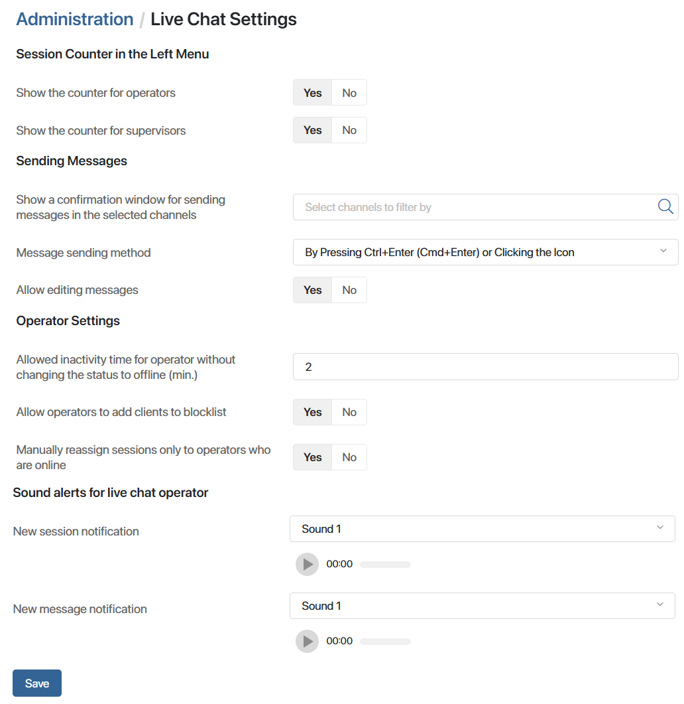
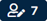

After creating one or more Live Chats, you can change the parameters that affect the work of employees in all Live Chats configured in the system.
начало внимание
Live Chat settings are available only for users included in the Administrators group.
конец внимание
To change the settings:
- Go to Administration > Live Chat Settings.
- Change the values of the options:

- Show the counter for operators. This option controls the display of unallocated sessions counter for operators in the left menu.
- Show the counter for supervisors. This option controls the display of the unallocated sessions counter for supervisors  in the left menu.
- Show a confirmation window for sending messages in the selected channels. By default, messages in live chats are sent immediately when the specified keyboard shortcut is pressed or the send icon on the session page is clicked. You can customize the display of the confirmation window so that the operator can return to the message and check its correctness again before sending it.
The option is applied at the level of separate communication channels configured within the created live chats. For example, you can enable the confirmation window for Telegram connected to the Order Processing live chat, or for the email channel in the Customer Service live chat.
To enable the option for a channel, add it to the list. To do this, start typing its name in the field or click the magnifying glass icon and select the desired option.
An internal channel is created for each live chat by default. Its name indicates the live chat, e.g., Internal channel Technical Support. Select it to enable the confirmation window for responding to BRIX user requests.
- Message sending method. Select how the operator can send messages in sessions:
- By Pressing Ctrl+Enter (Cmd+Enter) or Clicking the Icon. The option is used by default
- By Pressing Enter or Clicking the Icon
- Only on Icon Click
- Allow editing messages. Select Yes so that operators can:
- Allowed inactivity time for operator without changing the status to offline (min.). Set the period in minutes after which an inactive operator or live chat supervisor is automatically switched to the Offline status. A user is considered inactive if they have logged out of BRIX, closed the browser window, or are not connected to the network. You can specify an integer from 2 to 999 in the field. By default, the minimum value of 2 is set, at which the status changes after 1 or 2 minutes.
- Allow operators to add clients to blocklist. Specify who can block client accounts and retrieve them from the blocklist directly from the session page. By default these actions are available to the operators and the supervisor. Select No if you want this option to be available only to the supervisor.
- Manually reassign sessions only to operators who are online. When reassigning the session, a supervisor or operator can select any employee regardless of their status. Set Yes to display only Online users in the operator selection window.
- New session notification. Select the sound alert for operators that they will hear when a new session is created in the live chats for which they are responsible.
- New message notification. Select the sound alert for operators that they will hear when a new message is received in the sessions assigned to them.
- At the bottom of the page, click Save.